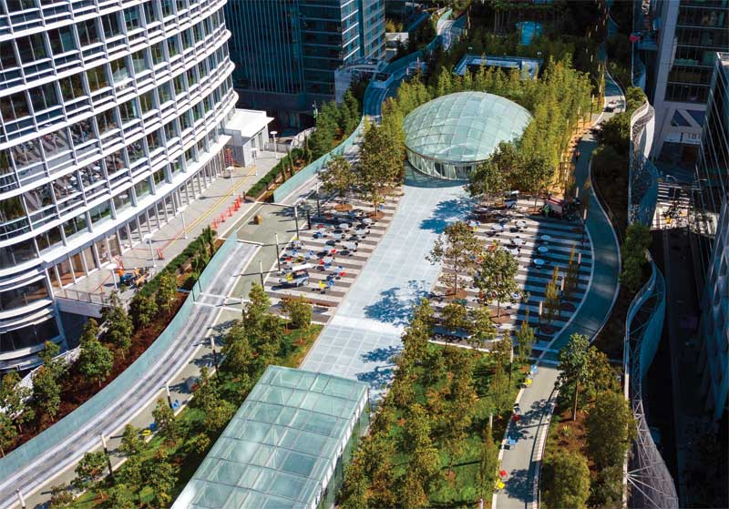
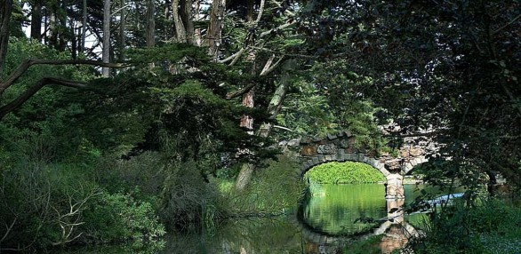
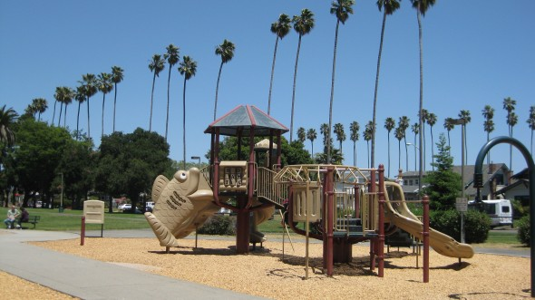
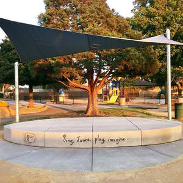
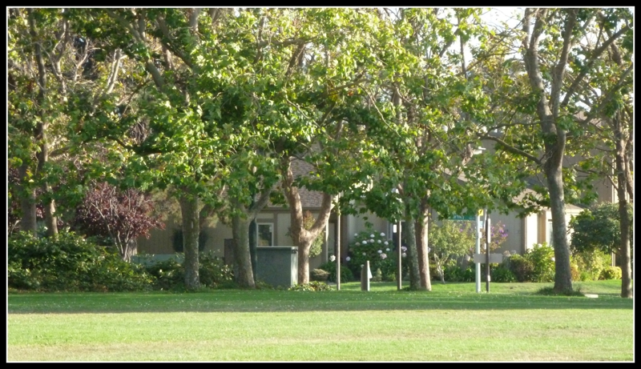
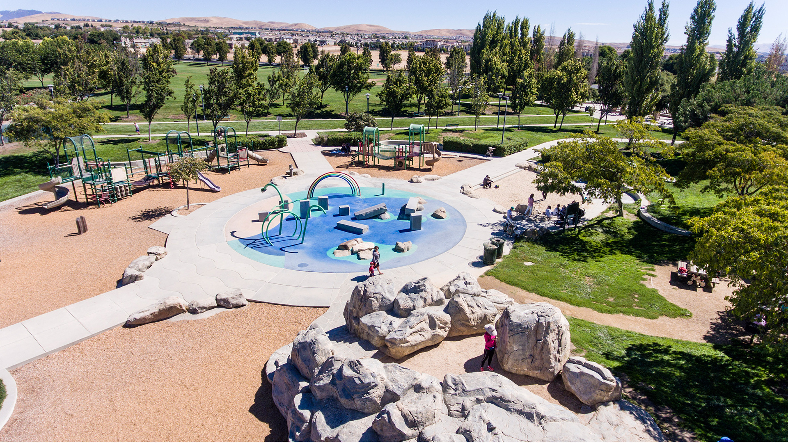

Located in the business district of San Francisco, this public urban park, found on the fourth floor of the Salesforce Transit Center, spans four city blocks and is a center of activity. In addition to giving a good view of the city, it is home to 13 different botanical feature areas, grassy lawns, dancing fountains, a children's play area, and an amphiteater that are accessible to the general public. This is the perfect to relax and hangout with others while being several stories above the ground.
*If you want an even cooler experience, take the gondola up to the urban park. It should be located near the Fremont Street entrance of the transit center. Also, there is a Starbucks near the center of the park.

As one of the best places to visit in San Francisco, Golden Gate Park spans 1,017 acres and contains gardens, playgrounds, lakes, pinci groves, trails, and monuments - all for the leisure of the public. This park is located in a remote area, allowing its visitors to reconnect with the natural world and relax. Some of the key features to visit in the park are the California Academy of Science, the de Young Museum, and the San Francisco Botanical Garden.

In Alameda, Washington Park would easily be considered one of the best in the city and also a great place to lounge around. It spans a large area of land and appeals to all ages with its large playground, soccer and baseball field, general green space, and the newly renovated basketball courts - with the help of the Golden State Warriors.

Of the many playgrounds of Alameda, Krusi Park is probably the largest and most accessible one. Located several blocks away from both the Southshore Shopping Center and the Downtown, also known as Park Street by the locals, Krusi Park's playground is a vast structure of various features and a joy to all. Next to it, there are tennis courts as well as a soccer and baseball field and an space for the arts.

Leydecker Park, which is right next to the Bay Farm Library, is a great place to hangout out in the Harbor Bay Landing Shopping Center because of its vast green space. Along with a basketball court, a playground for younger kids, and a baseball field, this area is meant for adolescents of all ages and a good place to meet up.

Emerald Glen Park is an expansive park, including features such as two pools, a waterslide tower, a Splash Zone, baseball diamonds, basketball courts, and a community room. Available for various occasions and recreational interest, the park is geared for all ages and interests.